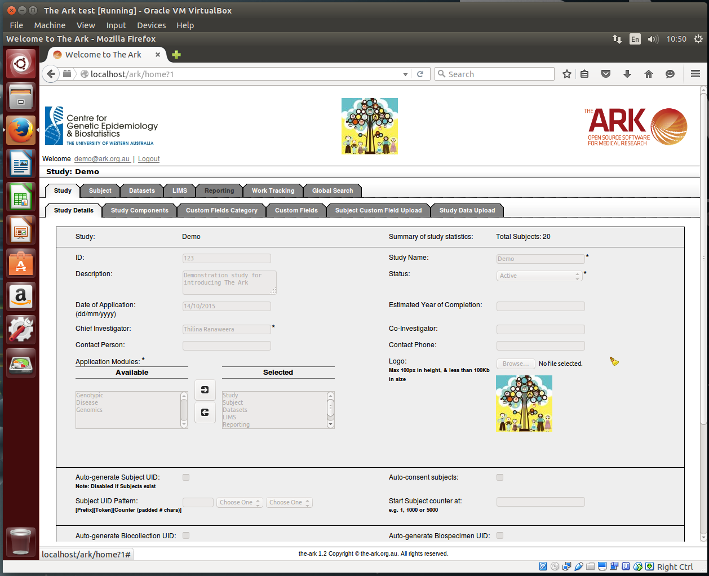

There are two easy ways to try The Ark: 1) using a demonstration instance hosted at The University of Melbourne, or 2) using Virtual Machine software to get a local installation of The Ark that is ready to use "out of the box". These pages provide instruction on how to use these methods to explore The Ark.
The pre-configured installations of The Ark referenced below are based on a development build of the software. As such, the demonstrations represent programming work-in-progress, and will contain bugs that have been resolved in the next major release. New demonstrations based on the latest stable version of The Ark will be made available with the release of version 1.2b in Q1 2017.
In a web browser, navigate to the public demonstration instance of The Ark at https://demo.sphinx.org.au/ark. This instance is hosted by The University of Melbourne and contains two example studies, Demo 1 and Demo 2, each comprising a variety of synthetic data. Two user accounts have been setup with login credentials, and access to the example studies, as follows.
| Username | Password | Access To Study |
Access Level |
| demo-readonly@ark.org.au | ReadOnly@1 | Demo 1 | Read only |
| demo-studyadmin@ark.org.au | StudyAdmin@1 | Demo 2 | Administrator |
The ability to upload data files (including file attachments) has been disabled in the demonstration instance. User management has also been disabled.
Changes to the configuration of Demo 2 and its data are reset daily.
Preparation
The virtual machine setup requires a host computer with a minimum of 4GB RAM, 10GB free disk space, and a 64-bit Windows, OS X or Linux operating system.
We provide an MD5 checksum for the virtual appliance so that users can verify the integrity of their downloads. To calculate the MD5 checksum of a downloaded file, e.g. The Ark - demo.ova, launch a terminal and use commands of this form:
| Linux | md5sum 'The Ark - demo.ova' |
| OS X | md5 'The Ark - demo.ova' |
| Windows | CertUtil -hashfile "The Ark - demo.ova" MD5 |
This example assumes that the user is logged into demo.sphinx.org.au using the demo-studyadmin@ark.org.au account. The guide is general, however, and applies also to the pre-configured VM, which is based upon The Ark at demo.sphinx.org.au.
Note: The Ark does not support navigation using the browser’s “back” and “forward” buttons; use The Ark’s own user interface to navigate between screens of the system.
- From the study list, select a study, e.g. Demo 2, by clicking on the study name.This brings Demo 2 into context and enables the Study, Subject, Datasets, LIMS, Reporting, Work Tracking and Global Search top-level tabs:
- Study tab – Study data management, including setup of the study meta-data, ID number schemes, study components (i.e. trackable consent items), and subject custom fields/categories. Study calendars are also configured here.
- Subject tab – Subject-related data management, including search capabilities, and the ability to create/read/update/delete: standard demographic data; subject custom field data; contact (telephone, address, email) and consent information; correspondences; file attachments (e.g. scanned documents); research datasets (e.g. questionnaire responses); biospecimen data; and pedigree information.
- Datasets tab – Management of research dataset definitions, including the setup of data dictionaries and data dictionary categories, and definition of research dataset templates using these fields and categories.
- LIMS tab – Laboratory information management, including the specification of biospecimen inventories (sites, freezers, racks, boxes), in addition to custom fields/categories for biocollection and biospecimen records.
- Reporting tab – Generation of study reports, and configurable data extractions that are capable of sourcing data from all major data modules of The Ark.
- Work Tracking tab – Management of a study's researcher meta-data, research-related tasks, and their associated costs. The Work Tracking module allows researchers to define billable item types for their studies, and then record work requests (i.e. items of work) which comprise one or more billable items. The status of work requests, and their billing, can be tracked over time.
- Global Search tab – A data search facility that operates over subject and biospecimen data across all studies available to the user.
- Click the top-level Subject tab.
- Click Subject UID A0001 in the study’s subject list. The top of the screen now shows the study (Demo 1) and the subject (A0001) in context.
- Each of the Subject sub-tabs will now manage and display data with respect to Subject A0001 in Study Demo study. Click these tabs to explore the data management functionality with respect to a single subject. To try The Ark's study-level functionality, click the top-level tabs (e.g. Study, Datasets, LIMS, Reporting, etc.) and their sub-tabs.
Refer to The Ark's documentation page for more information.

The Ark running within Oracle Virtual Box